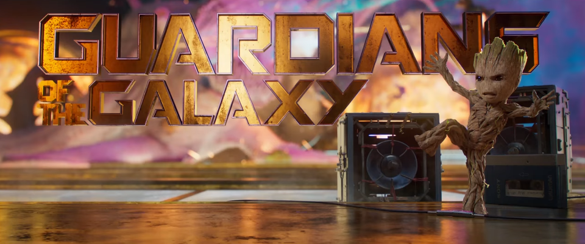
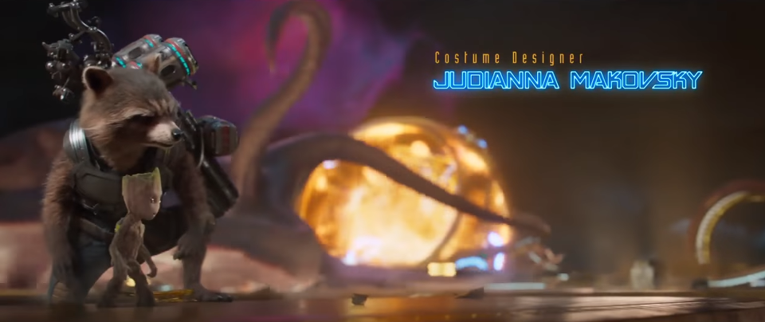
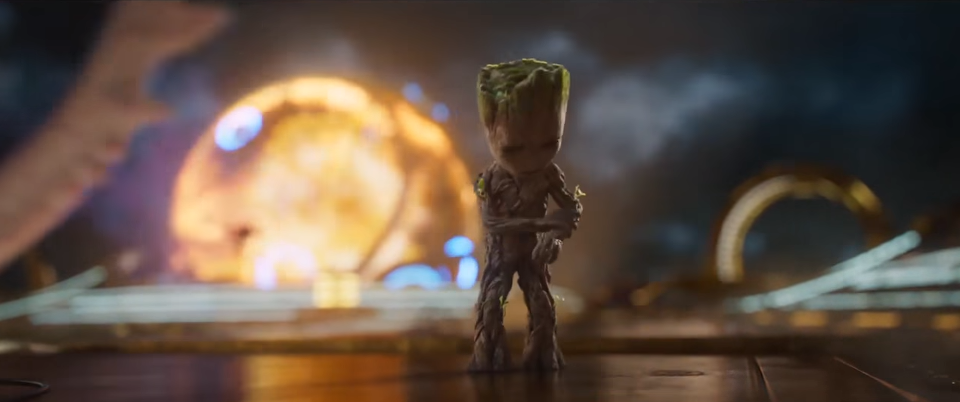
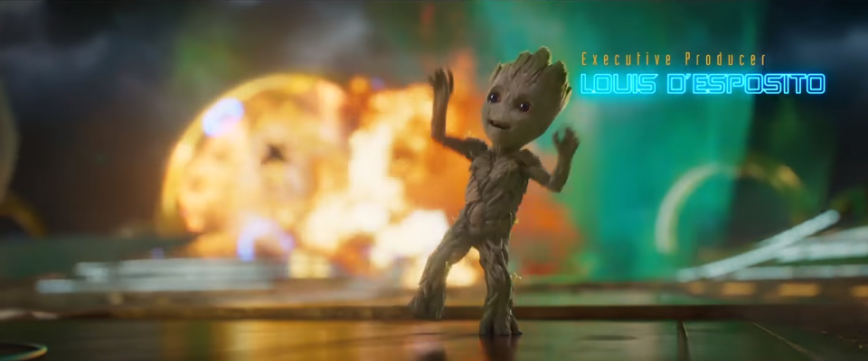

베이비 그루트가 춤을 추던 음악은 ? - Mr. Blue Sky 가사 해석
게시: 2018-05-18T06:30:00+09:00
2017년에 나온 마블 영화인 가디언즈 오브 갤럭시 Vol.2는 전작과 마찬가지로 가볍고 유쾌한 히어로 무비입니다. 특히 베이비 그루트의 귀욤귀욤이 뿜뿜 뿜어져 나와서 제 와이프도 무척 좋아하는 영화입니다. 특히 저처럼 7080 팝 음악을 좋아하는 사람들에게는 액션 영화라기보다는 거의 음악 영화라고도 할 수 있을 정도로 그 시절의 팝 음악을 곳곳에 삽입했습니다. 저 뒤 배경에서 주인공들이 엄청난 우주 괴물과 사투를 벌이는 와중에, 베이비 그루트가 이 음악에 맞추어 경쾌하게 스텝을 밟으며 춤을 추는 오프닝 장면에 삽입된 음악은 아마 20대 분들도 어디선가 한 번쯤은 들어봤다고 느끼실 만한 곡인데, 바로 영국 락 그룹 Electric Light Orchestra (ELO)의 Mr. Blue Sky입니다. 저희 가족은 이 영화를 집에서 IPTV로 봤는데, 이 오프닝 장면은 한 10번 정도 되풀이해서 본 것 같습니다.




(백그라운드에서는 무시무시한 싸움이 벌어지고 있는데다, 아빠 너구리 로켓에게 혼도 나고 도마뱀에 올라탔다가 내동댕이도 쳐지지만 그래도 툭툭 털고 일어나 금방 환하게 웃으며 춤추는 베이비 그루트. 우리도 이처럼 춤을 추게 될 날이 꼭 올 겁니다.)
굉장히 신나는 템포와 비트의 이 곡은 가사 내용도 비갠 뒤 깨끗하고 맑은 날씨에 기뻐하는 내용으로서 매우 밝습니다. 그런데 가만히 그 가사를 들어보면 걱정거리 하나 없이 그저 그냥 즐겁기만 한 내용은 아닙니다. 반복되는 후렴구에는 이런 내용이 있지요. 뭔가 잘못된 일이 있어서 오랫동안 슬픔을 겪은 끝에 얻은 아름다운 하루라는 것을 알 수 있습니다.
Please tell us why
부디 이유를 말해줘요
You had to hide away
당신은 멀리 숨어있어야 했쟎아요
For so long (so long)
정말 오랫동안이요
Where did we go wrong?
우리는 대체 어디서 잘못 되었던 걸까요 ?
또 가사 중에 이런 내용도 있습니다. 이렇게 맑고 밝은 하늘이 언제까지나 계속 될 수는 없고, 다시 암흑이 찾아온다는 내용이지요. 그러나 결코 절망하거나 덧없음을 비관하지 않습니다. 이렇게 주어진 소중한 하루를 영원히 기억하겠다고 다짐하지요.
But soon comes Mr. Night
하지만 곧 밤이 찾아와요
Creeping over
음침하게 기어오지요
Now his hand is on your shoulder
그 자의 손이 당신 어깨 위에 놓여 있는 것이 보여요
Never mind.
그래도 괜찮아요
I'll remember you this
난 당신을 이렇게
I'll remember you this way!
난 당신을 이렇게 기억할거니까요 !
1978년에 나온 이 곡의 가사는 이 그룹의 보컬이자 기타리스트인 제프 린(Jeff Lynne)이 스위스의 어느 샬레(chalet, 시골 집, 별장)에서 앨범 작업을 하며 쓴 것입니다. 스위스라고 하니까 아주 좋은 환경이라고 생각되긴 하는데, 제프 린이 곡을 쥐어짜내느라 스트레스를 받고 있던 그 때 하필 2주 동안이나 계속 날이 흐리고 안개가 껴 더욱 마음이 우울했대요. 그런데 마침내 날이 개고 태양이 찬란하게 나온 것을 보고 이 곡을 썼다고 합니다.
대중 가요의 가장 큰 장점 중 하나는 가사의 속 뜻을 듣는 사람 각자 자기 마음대로 해석할 수 있다는 것입니다. 그래서 보통 연애를 할 때면 유행가 가사가 다 자기 이야기 같다고들 하지요. 어제 북한이 갑자기 북미 회담 파토낼 것처럼 협박질하는 것 때문에 이거 또 한반도 평화의 기회가 날아가는 것 아닌가 싶을 때 이 음악을 들으며 그 가사를 웅얼거려 보면, 한반도에도 평화가 반드시 다시 올 거라고 낙관하는 마음이 생깁니다. 아마 소위 문빠들은 (저도 어쩌면 그 중 하나일 수 있는데) Mr. Blue Sky를 문재인이라고 생각하면서 들을 수도 있겠군요.
Sun is shining in the sky
There ain't a cloud in sight
It's stopped raining
Everybody's in a play
And don't you know
It's a beautiful new day
Hey ay ay!
하늘에 태양이 빛나고 있어요
시야에는 구름 한 점 없네요
비가 그쳤고
모두들 뛰놀고 있어요
그거 몰라요 ?
오늘은 정말 아름다운 하루에요
헤에에 !
Runnin' down the avenue [*panting*]
See how the sun shines brightly
In the city
On the streets where once was pity
Mr. Blue
Sky is living here today
Hey ay ay!
거리를 뛰어내려가
태양이 얼마나 찬란히 빛나는지 봐요
도시 안에서는요
한때 우울했던 거리에
미스터 블루 스카이가
생생히 함께 하고 있어요
헤에에 !
Mr. Blue Sky
Please tell us why
You had to hide away
For so long (so long)
Where did we go wrong?
미스터 블루 스카이
부디 이유를 말해줘요
당신은 멀리 숨어있어야 했쟎아요
정말 오랫동안이요
우리는 대체 어디서 잘못 되었던 걸까요 ?
Hey you with the pretty face
Welcome to the human race
A celebration
Mr. Blue Sky's up there waitin'
And today
Is the day we've waited for
Ooorrr
이봐요 거기 예쁜 얼굴의 당신말이에요
인류에 합류한 거 환영해요
축하 잔치를 벌이자구요
미스터 블루 스카이가 저기 떠서 기다리쟎아요
그리고 오늘은
우리가 기다리던 바로 그 날이에요
오오오
Oh, Mr. Blue Sky
Please tell us why
You had to hide away
For so long (so long)
Where did we go wrong?
미스터 블루 스카이
부디 이유를 말해줘요
당신은 멀리 숨어있어야 했쟎아요
정말 오랫동안이요
우리는 대체 어디서 잘못 되었던 걸까요 ?
Hey there Mr. Blue
We're so pleased to be with you
Look around see what you do
Everybody smiles at you
이봐요 거기 미스터 블루
당신과 함께 있어 우린 정말 기뻐요
주변을 둘러봐요 당신이 뭘 하는지
모두들 당신을 보고 웃쟎아요
Mr. Blue you did it right
But soon comes Mr. Night
Creeping over
Now his hand is on your shoulder
Never mind.
I'll remember you this
I'll remember you this way!
미스터 블루 스카이 당신이 잘 한 거에요
하지만 곧 밤이 와요
음침하게 기어오지요
그 자의 손이 당신 어깨 위에 놓여 있는 것이 보여요
그래도 괜찮아요
난 당신을 이렇게
난 당신을 이렇게 기억할거니까요 !
베이비 그루트가 이 Mr. Blue Sky에 맞춰 춤을 추는 가디언즈 오브 갤럭시 Vol.2의 오프닝 장면은 아래에서 감상하세요.

베이비 그루트 댄스신 https://www.youtube.com/watch?v=PgzZCb0fAj0
제대로 Mr. Blue Sky 곡은 아래에서 감상하십시요. University of Southern California 학생들이 제작했다는 이 애니메이션 뮤비는 ELO 공식 웹사이트에서 2012년에 릴리즈된 것인데 정말 한번 보실만 합니다.

Mr, Blue Sky 공식 뮤비 https://www.youtube.com/watch?v=swYdKF1MpWg
Source :
https://en.wikipedia.org/wiki/Mr._Blue_Sky
https://www.quora.com/What-is-the-ELO-song-Mr-Blue-Sky-about